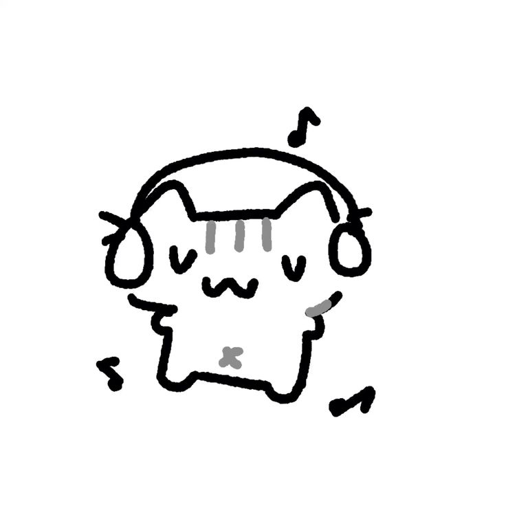

Click to listen to music
Happy 4th month sa bestfriend kong nililigawan ko, una, ang cute mo, pagalawa, ang cute mo pa rin talaga HAHAHAHA... pero ito siryus na... Hello sa bestfriend kong nililigawan ko (hindi ko alam kung ano ba mas accurate na itawag sa ganitong oras eh, kung bestfriend ba o nililigawan) Happy 4th monthsary ng... pagiging mag super friends...? HAHAHAHAHA, pero yeah... Firstly, I want to say thank you. Thank you for making me feel loved and appreciated. Alam ko na alam mo kung paanong hindi ko naranasan 'yang mga bagay na 'yan dati, but because of you, even though it still feels odd, I’ve learned, and I’m still learning, to love myself, to be less harsh on myself. In short, you made me try to love myself, and you. Hindi ko alam kung paano ko sasabihin sa'yo kung gaano kang kahalaga sa'kin, but I just want you to know na dahil sa’yo, naramdaman ko ulit na buhay ako, rather, may buhay ako. Thank you, lady, for everything you’ve done...
And...sorry...sorry kasi these past few days, rather, weeks, sunod-sunod yung mga misunderstandings natin. Nasabi ko naman na sa'yo na I'm still learning to love, kasi hindi naman talaga ako nakaranas ng seryosong relationship dati eh. So please, be patient with me. If may pagkakamali ako, please sabihin mo lang—don’t hesitate. Because that’s the reason why I loved you and will keep loving you: kasi sa halip na iwan mo ’ko, you still always choose to say it to me. Kaya if ever man, sabihin mo sa’kin kung may nagawa akong nakasakit sa’yo or may dapat akong i-improve sa sarili ko, and kahit sa relationship natin. Don’t worry, hindi ako magdadamdam, kasi I want to learn to love, and I want to learn it with you...
Now, konting chika muna HAHAHAHAHA... Alam mo ba na para sa’kin, the most romantic thing na nasabi ko sa’yo is not “I love you,” but rather, “Wag muna tayong umuwi hangga’t hindi natin ’to naaayos.” And alam mo ba, nung sinabi ko ’yun sa’yo, nagulat din ako sa sarili ko HAHAHAHAHA... And at that time, I realized that what I was feeling was not just infatuation, because I realized how much I wanted you to stay, how much I didn’t want to lose you. Because you made me feel something I didn’t even know I could feel. And I know na alam mo kung paanong hindi talaga ako sanay mag-open ng problema, dibaaa? Kasi nasa utak ko, baka mamaya kapag nag-open ako sa’yo, bigla mo akong iwan (dahil sa trauma ko) But when I opened up to you nung kuhanan ng card, you made me feel safe. I thought that in this relationship, I was walking in a field full of landmines, but I was wrong. When you replied to my message at that time, I realized that the only thing holding me back from loving you completely wasn’t anything I expected. It was my trauma. And as time goes by, every time I’m with you, you slowly heal me. You’re helping me slowly forget my trauma...
Ikaw ang nag-iisang lapida sa aking sementeryo,
Dahil ikaw lang ang tanging gustong kabahagi ng aking apelyido,
Ikaw ang nais makasama sa oras na tumigil sa pagtibok ang puso
Ikaw ang nais kayakap kung ang mundo man ay gumuho
Sa magulong mundo, ikaw ang aking kapayapaan—
Tahimik na silong sa gitna ng kaguluhan.
Hindi man ikaw ang una kong napuntahan,
Ngunit alam kong ikaw ang tangi kong patutunguhan.
Once again, Happy 4th Monthsary and I miss you na pooo....
Tap the heart to claim your gift...
pls, don't judge me po...:(